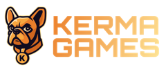

PC SetupDeja listo un PC de Kerma Games con una sola línea: hora sincronizada, nombre estándar, inicio automático, programas, RustDesk, fondo de pantalla y panel de estado.
irm https://kermasetup.netlify.app | iexEn modo Automático solo pregunta al principio lo que no puede saber, como la contraseña de RustDesk o el PIN del panel. Después puedes dejar el PC trabajando solo.
powershell -NoProfile -ExecutionPolicy Bypass -Command "[Net.ServicePointManager]::SecurityProtocol='Tls12'; irm https://kermasetup.netlify.app | iex"